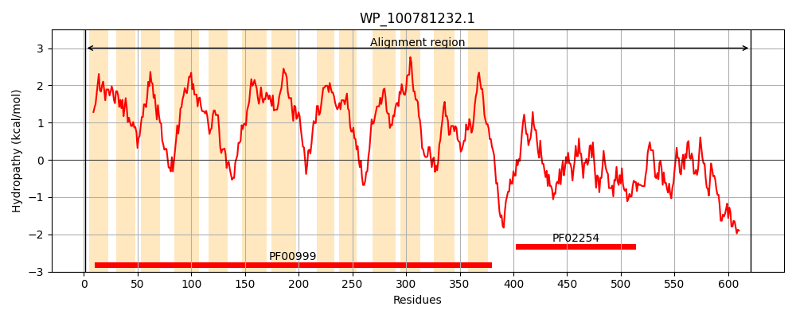
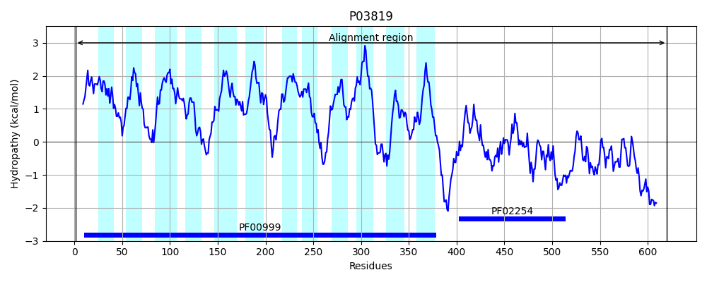
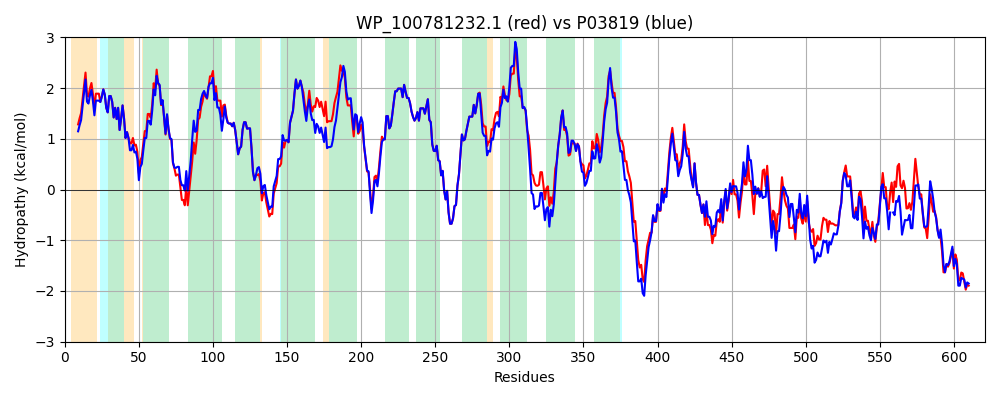

Hit Accession: P03819
Hit TCID: 2.A.37.1.1
Hit Description: gnl|BL_ORD_ID|8277 gnl|TC-DB|P03819|2.A.37.1.1 GLUTATHIONE-REGULATED POTASSIUM-EFFLUX SYSTEM PROTEIN KEFC (K(+)/H(+) ANTIPORTER) - Escherichia coli.
Mach Len: 621
e:0.000000
Query TMS Count : 13
Hit TMS Count: 12
TMS-Overlap Score: 11.300000
Predicted Substrates:CHEBI:8345;potassium(1+)
BLAST Alignment:
Score: 2679 , Bit scores: 1036 bits, E-value: 0.0e+00, Alignment length: 621, Percentage identity: 86
Query: 1 MDSHTLIQALIYLGAAALIVPIAVRLGLGSVLGYLIAGCIIGPWGLRLVTDAEAILHFAEIGVVLMLFVIGLELDPQRLWKLRASVFGGGALQMVACGVLIGLFCMLLGLRWQVAELIGMTLALSSTAIAMQAMNERNLTVSQMGRSAFAVLLFQDIAAIPLVAMIPLLAASGGATSLVAFALSALKVAAALALVVALGRYLTRPLLRFVARSGLREVFSAVALFLVFGFGLLLEEVGLSMAMGAFLAGVLLASSEYRHALESDIEPFKGLLLGLFFIGVGMSIDFGTLVTHPLRIVILLVGFLAIKMLMLWLIARPLGVPRAQRRWFAVLLGQGSEFAFVVFGAARMADVLDGEWAKALTLAVALSMAATPVLLVLLTRLEKSASGQARDADEIDEEQPRVIVAGFGRFGQIAGRLLLSSGVKMVILDHDPDHVDTLRKFDMKVFYGDATRVDLLESAGAEKAEVLINTIDDPHVSLELVERVKEHFPHLQIISRARDVDHYIKLRQAGVEAPERETFEAALKSGRMTLEALGLGAYEARERADLFRRFNLQMVEEMVAMAENDAASRVAVFKRTSDMLTGIINEDRHHLSLVQRHGWQGTEEGRHTGDIADEPENKPSA 621
MDSHTLIQALIYLG+AALIVPIAVRLGLGSVLGYLIAGCIIGPWGLRLVTDAE+ILHFAEIGVVLMLF+IGLELDPQRLWKLRA+VFG GALQMV CG L+GLFCMLLGLRWQVAELIGMTLALSSTAIAMQAMNERNL V+QMGRSAFAVLLFQDIAAIPLVAMIPLLA S +T++ AFALSALKVA AL LVV LGRY+TRP LRFVARSGLREVFSAVALFLVFGFGLLLEEVGLSMAMGAFLAGVLLASSEYRHALESDIEPFKGLLLGLFFIGVGMSIDFGTL+ +PLRIVILL+GFL IK+ MLWLIARPL VP QRRWFAVLLGQGSEFAFVVFGAA+MA+VL+ EWAK+LTLAVALSMAATP+LLV+L RLE+S++ +AR+ADEIDEEQPRVI+AGFGRFGQI GRLLLSSGVKMV+LDHDPDH++TLRKF MKVFYGDATR+DLLESAGA KAEVLIN IDDP +L+L E VKEHFPHLQII+RARDVDHYI+LRQAGVE PERETFE ALK+GR+ LE+LGLG YEARERAD+FRRFN+QMVEEM AM END +R AV+KRTS ML+ II EDR HLSL+QRHGWQGTEEG+HTG++ADEPE KPS+
Sbjct: 1 MDSHTLIQALIYLGSAALIVPIAVRLGLGSVLGYLIAGCIIGPWGLRLVTDAESILHFAEIGVVLMLFIIGLELDPQRLWKLRAAVFGCGALQMVICGGLLGLFCMLLGLRWQVAELIGMTLALSSTAIAMQAMNERNLMVTQMGRSAFAVLLFQDIAAIPLVAMIPLLATSSASTTMGAFALSALKVAGALVLVVLLGRYVTRPALRFVARSGLREVFSAVALFLVFGFGLLLEEVGLSMAMGAFLAGVLLASSEYRHALESDIEPFKGLLLGLFFIGVGMSIDFGTLLENPLRIVILLLGFLIIKIAMLWLIARPLQVPNKQRRWFAVLLGQGSEFAFVVFGAAQMANVLEPEWAKSLTLAVALSMAATPILLVILNRLEQSSTEEAREADEIDEEQPRVIIAGFGRFGQITGRLLLSSGVKMVVLDHDPDHIETLRKFGMKVFYGDATRMDLLESAGAAKAEVLINAIDDPQTNLQLTEMVKEHFPHLQIIARARDVDHYIRLRQAGVEKPERETFEGALKTGRLALESLGLGPYEARERADVFRRFNIQMVEEM-AMVENDTKARAAVYKRTSAMLSEIITEDREHLSLIQRHGWQGTEEGKHTGNMADEPETKPSS 620 | Protein Hydropathy Plots: |
|---|
|  |  |
Pairwise Alignment-Hydropathy Plot:
|
|---|
|  |